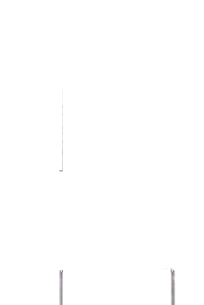
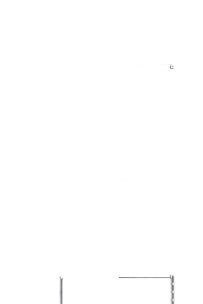
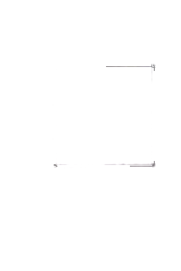
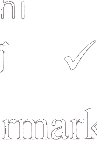

Nǐ hǎo! Nǐ hǎo! Hěn gāoxìng rènshi nǐ.例如：女：你好！男：你好！很高兴认识你。
How do you do?
How do you do? Nice to meet you.Как дела?
Как дела? Приятно познакомиться.AА
6.
7.
8.
第四部分Part IVЧасть IV
第9—10题：听句子和问题，选择正确答案。每题听两次。Questions 9-10: Listen to each sentence and question, and choose the correct answer. Each sentence and question will be played twice.Вопросы 9-10: Прослушайте каждое предложение и вопрос и выберите правильный ответ. Каждое предложение и вопрос прозвучат дважды.
Xiàwǔ wǒ qù chāoshì, wǒ xiǎng mǎi yìxiē shuǐguǒ.例如：下午我去超市，我想买一些水果。
I'm going to the supermarket this afternoon. I want to buy some fruit.Я иду в супермаркет сегодня днем. Я хочу купить немного фруктов.Shuōhuàrén xiàwù qù nǎlǐ?问：说话人下午去哪里？
Where is the speaker going this afternoon?Куда говорящий идет сегодня днем?A超市
supermarketсупермаркетB医院
hospitalбольницаC学校
schoolшколаxiàkè hòuA 下课后
B上课前
C回家后
xiǎo gǒuA 小狗
B小猫
C小狗和小猫